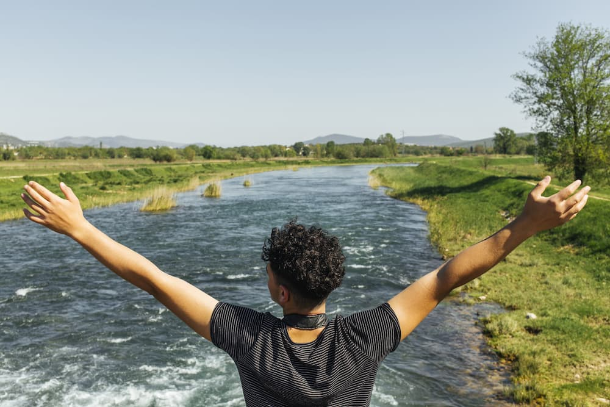

Have you been craving something new and exciting? Tired of the same old grind day-in and day-out? White Water Rafting promises adventure and the care free novelty of the most unforgetable rafting experience you'll ever get. Check out our site for more information about our history, trip offerings, and more.

White Water Rafting
White Water Rafting offers a variety of different trip options including fun for the whole family. Too see what is available to you, check out our trips now. And, if you decide one of these awesome packages is right for you, be sure to drop on in to our contact page and send us a message requesting a resevation. Also, don't forget to sign up for our newsletter for the latest in White Water Rafting offerings and happenings!